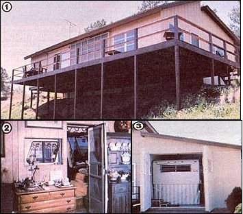

[1] The Bunzer family's RV Chalet?in addition to looking as conventional as and ""normal"" cottage?incorporates a simple solar collector that provides most of the home's daytime heat. [2] It's difficult to till where the firing morn ends anal the Ii! begins. [3] The coach rests snugly against the partition wall behind the ""invisible"" doors.